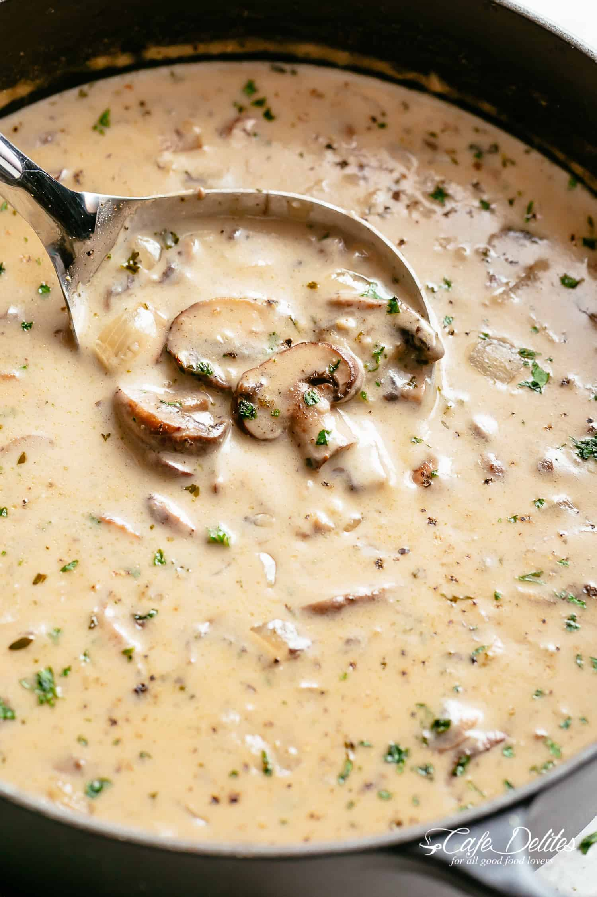

Mushroom Soup

A picture of Creamy Mushroom soup
A warm bowl of soup so deliciously creamy with tender bites of mushroom pieces. Full flavoured with garlic, onions and herbs subtle enough to shine through and compliment the natural flavour of mushrooms without overpowering it. Cooked with easy to find ingredients you may already have in your kitchen, you are minutes away from a satisfying bowl of creamy goodness!
Ingredients
- Vegetables: Sweet pepper, Brocolli, Onions, Carrot, (optional), garlic
- Herbs: Parsley, Bay leaves,
- Cream: Half and half, heavy cream, light cream or thickened cream
- 2 tsp olive oil
- Salt to taste
- 2 beef bouillon cubes, crumbled
- 1 1/2 pounds (750 g) fresh brown mushrooms sliced
- Flour or Cornstarch to add the creamy texture
- Choice of red or white wine
Cooking Instructions
- Heat butter and oil in a large pot over medium-high heat until melted. Sauté onion for 2 to 3 minutes until softened. Cook garlic until fragrant, about 1 minute.
- Add mushrooms and 2 teaspoons thyme, cook for 5 minutes. Pour in wine and allow to cook for 3 minutes.
- Sprinkle mushrooms with flour, mix well and cook for 2 minutes. Add stock, mix again and bring to a boil. Reduce heat to low-medium heat, season with salt, pepper and crumbled bouillon cubes.
- Cover and allow to simmer for 10-15 minutes, while occasionally stirring, until thickened.
- Reduce heat to low, stir in cream or half and half. Allow to gently simmer (do not boil). Adjust salt and pepper to your taste.
- Mix in parsley and remaining thyme. Serve warm.
- Serve with your preferred choice of carbohydrate, I love mine with Garlic bread

Return to top of page
Return to main page